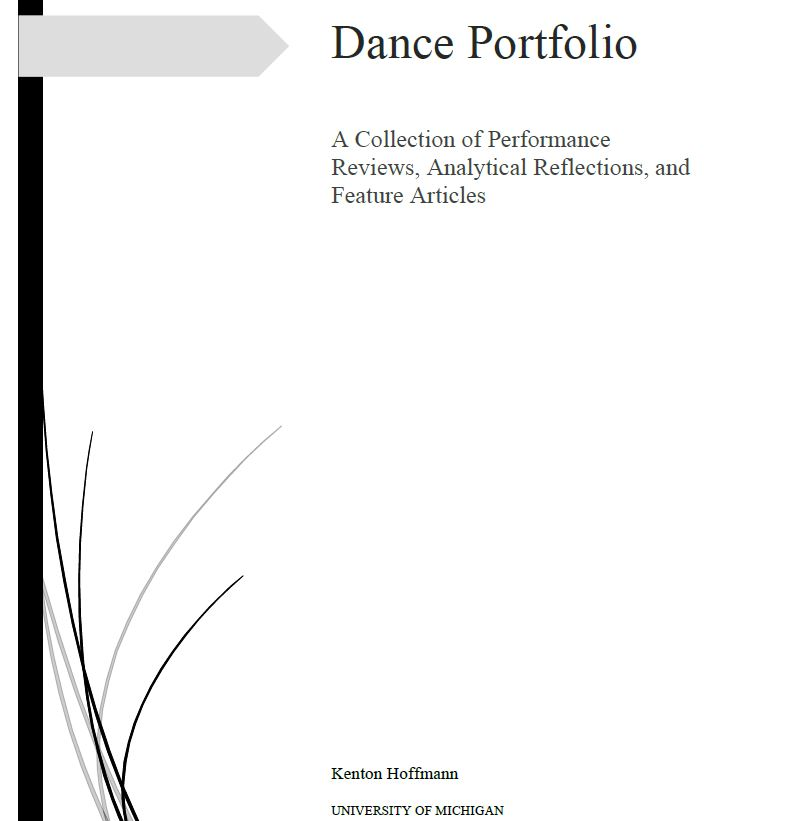
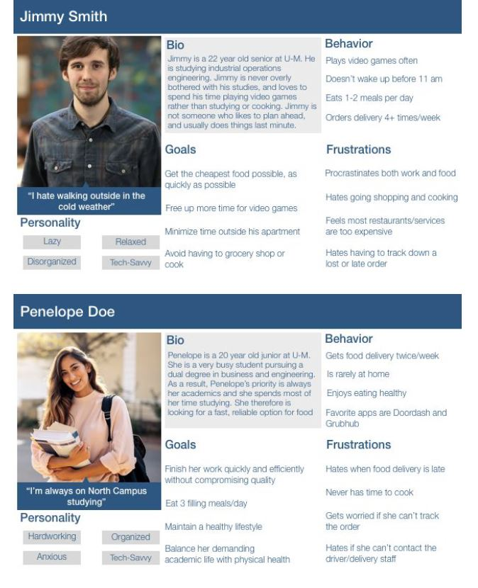
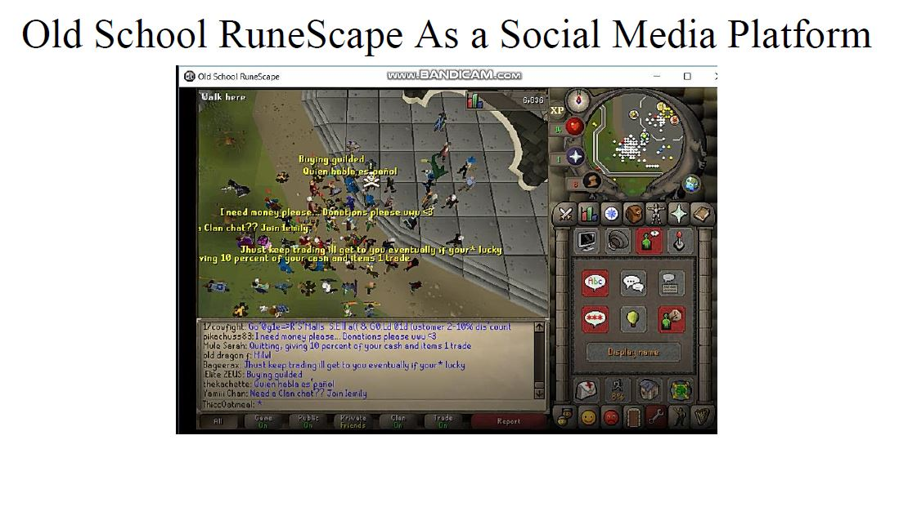
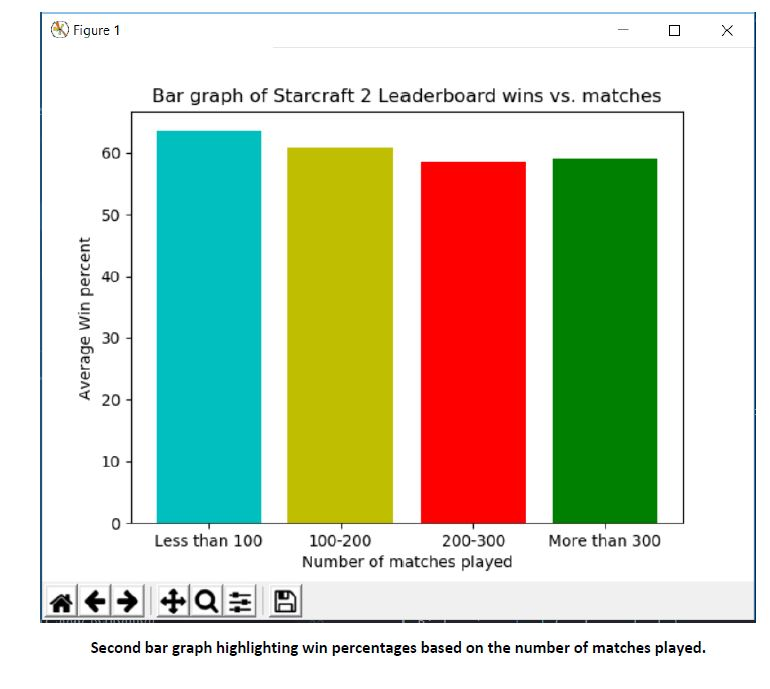
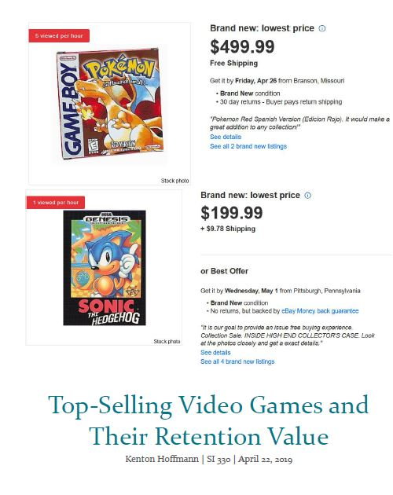
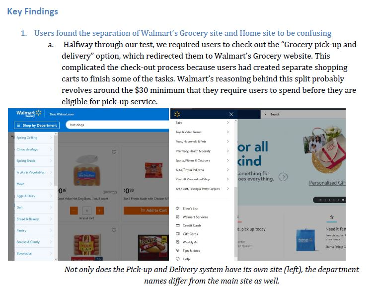

Aside from user experience design and data analysis, I've started developing an interest in the professional world of dance. For one of my classes at the University of Michigan, I was required to create a portfolio of performance reviews, biographies on prominent dancers, and an analysis on the topic of dance in the modern world. Dance has shown me the value of self expression and how important it is to stay in touch with reality when most of the world is going digital.
One of my first experiences creating a Usability report involved the delivery app DoorDash. For this report, my group wanted to understand the process of ordering food delivery on mobile app, how to define a successful ordering experience, and what motivates a college student to choose food delivery. We conducted interviews with students on campus and analyzed their responses to discover their attitudes toward delivery apps and their motivation for ordering online.
Instead of analyzing traditional social media platforms like Facebook and Twitter, I wanted to investigate the social interaction of massively multiplayer online (MMO) games. I found the social aspect of games like Runescape to be more representative of what people really are like because they can mask their identity behind an avatar and a unique username. Additionally, I find most Social Media sites boring as I mindlessly scroll through my feed on a daily basis. There are times when players purposefully troll or harass others, but it's easier to ignore than on social media sites where disparaging comments can turn otherwise close friends into bitter enemies in real life.
As an avid gamer, the next project I created also focused on videogames and online leaderboards. Using an API, I collected data for the top players in the game Starcraft 2 and created a visualization to show their statistics. In Starcraft 2, players choose between three different races to play in multiplayer to fit their playstyle. I wanted to see if there was one race that top players favored over the others and if one race had a significantly higher win percentage than the others.
Continuing the trend, this next project looked at the highest selling videogames of all time and the resale value of a mint condition physical copy of the game. I hoped to discover whether factors like the release date or the gaming platform contributed to game's worth. Used versions of a game are usually [retty cheap, but mint conditions of classics can sell for over $500 on auction sites like eBay.
Another Usability report that I conducted with a team, we decided to test the accessibility of Walmart's website. We hosted live test sessions where participants navigated the site and tried to complete tasks such as searching for a product, adding a product to the shopping cart, and scheduling an in-store pickup. We made recommendations to improve the website's functionality based on results from the tests and feedback from interviews with the participants.
